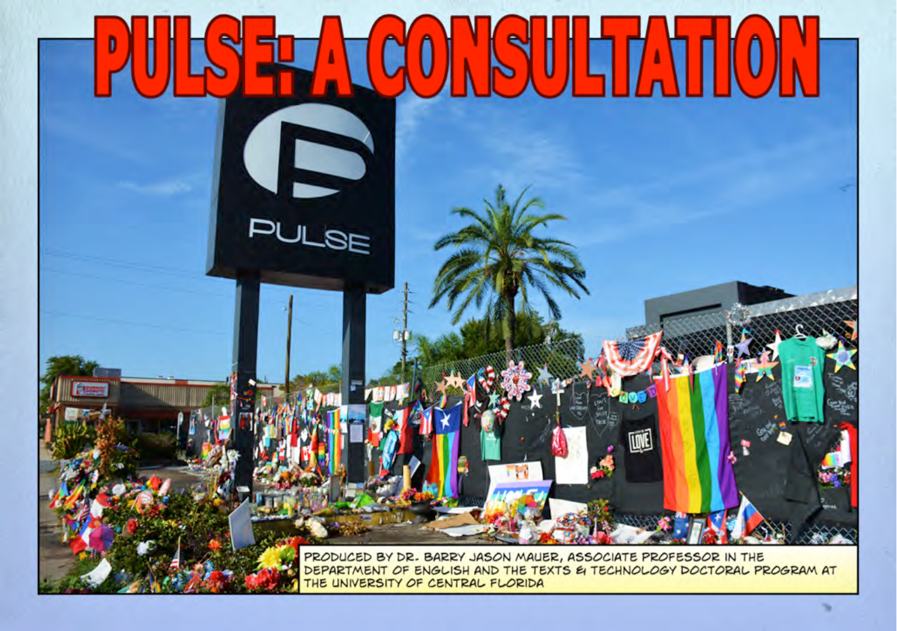

Citizen Curation
Barry Mauer

Curating involves the selection of materials, either from archives or from new acquisitions, and their arrangement in an exhibition. Exhibitions can serve any number of purposes: from selling artworks to educating the public to glorifying a leader. But the process of archival research, selection, and production of an exhibition can be re-imagined also as a process of attunement, of orienting to reality and of promoting wellbeing for the community. A wise citizenry takes an active role in looking to its past so it can reason about its future.
The Citizen Curator Project begins with the assumption that curation is a form of writing, well suited to an age of electronic multimedia in which it is possible to sample and remix virtually any texts. The project encourages ordinary citizens to begin the work of curating and to approach the task as a form of public policy consultation. Curating as activism requires that people assume the roles of uninvited consultants who witness catastrophe, deliberate about it, and wish to share their insights and recommendations with policy makers and other members of society. Because curating has been integral to the formation of community in the modern era – for example, museums arose with nation states and helped define national priorities – we encourage citizens to think of curating as another means of building and shaping community, a means of increasing their agency within a more democratic public sphere.
In February 2017, the Citizen Curator Project invited community members, students, and artists to create a series of exhibitions on various themes focused on the theme “Eliminationism and Resilience.” The exhibit was curated in response to the Pulse attack nightclub attack. This exhibition, and the work of citizen curation, is documented in the digital supplement to the book.
About the Author
Barry Mauer
Barry Mauer is an associate professor in the Department of English at the University of Central Florida, and former director of the Texts and Technology Ph.D. program. His published work focuses on developing new research practices in the arts and humanities. His latest research is about citizen curating, which aims at enlisting a corps of citizens to curate exhibits, both online and in public spaces, using archival materials available in museums, libraries, public history centers, and other institutions. He also publishes comics about delusion and denial, particularly as they affect the realm of politics.